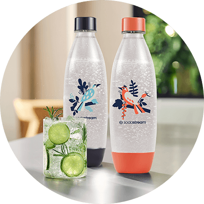
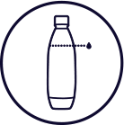
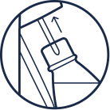
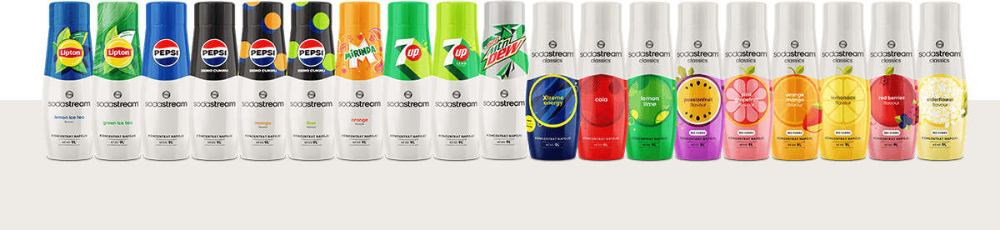

Butelka
BUTELKA FUSE
FREE BIRDS
2-PAK, NIEBIESKA I KORALOWA, 1 L
ZRÓB WODĘ GAZOWANĄ
WE WŁASNEJ KUCHNI!
TWOJE ZDROWIE JEST NAJWAŻNIEJSZE

Wielorazowe butelki do gazowania wody Fuse Free Birds nie zawierają
szkodliwych substancji BPA i BPS, które znajdują się w jednorazowych
butelkach. Dlaczego to ważne? Właśnie dzięki temu są one bezpieczne
dla Twojego zdrowia nawet podczas wielokrotnego
używania.
CHCESZ BYĆ EKO? NATURALNIE!
Wybierając ekspres do gazowania zamiast wody mineralnej ze sklepu,
działasz na rzecz ekologii. Nie tylko zastępujesz setki butelek
plastikowych tymi wielokrotnego użytku, lecz także oszczędzasz swój
czas i pieniądze!
Bądź eko, wybierz SodaStream!
JAK UŻYWAĆ BUTELKI DO
GAZOWANIA WODY?
1
Wlej do butelki zimną wodę filtrowaną lub z kranu.
2
Zamontuj butelkę w ekspresie i naciśnij przycisk lub dźwignię do gazowania.
3
Wyjmij butelkę z ekspresu gazującego i zakręć nakrętkę.
DO JAKICH EKSPRESÓW PASUJĄ BUTELKI
FUSE FREE BIRDS?
Wielorazowe butelki Fuse Free Birds nadają się do przygotowywania wody gazowanej w ekspresach SodaStream Art, Terra, DUO, Spirit oraz Source.
MORZE SMAKÓW SODASTREAM
Chcesz ugasić pragnienie ze smakiem? Sięgnij po jeden z wielu syropów smakowych SodaStream, żeby w kilka sekund przygotować domową Pepsi, Colę, Mirindę lub inny napój gazowany.
#PushForBetter